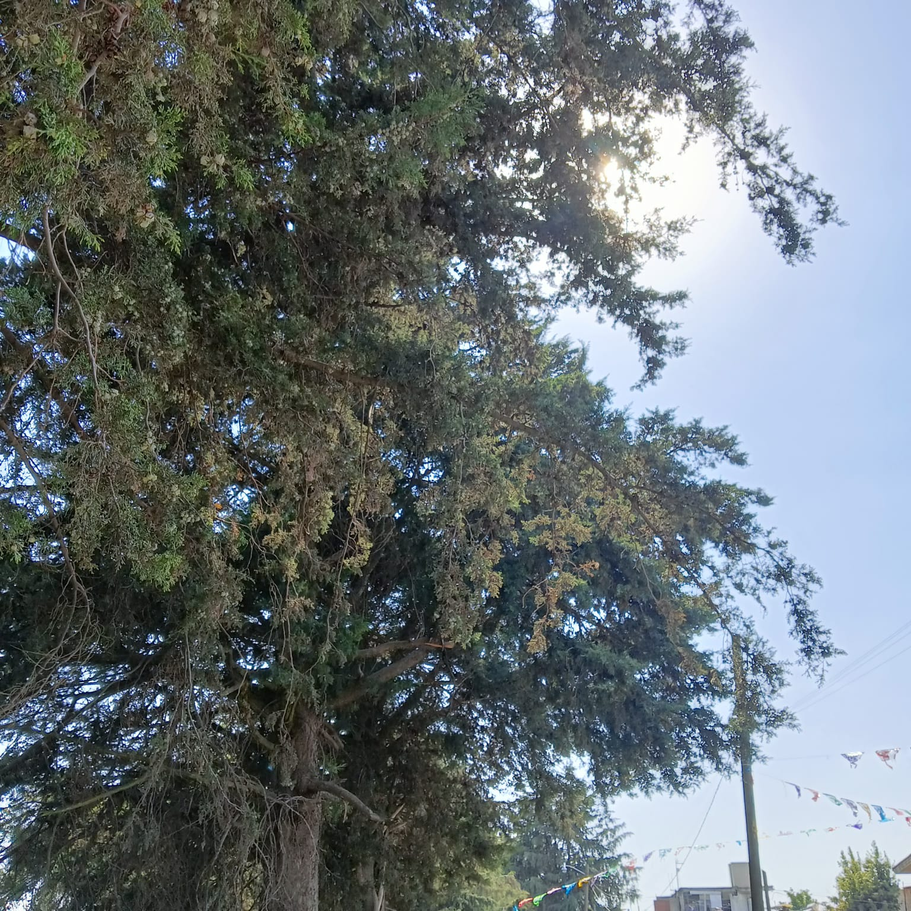
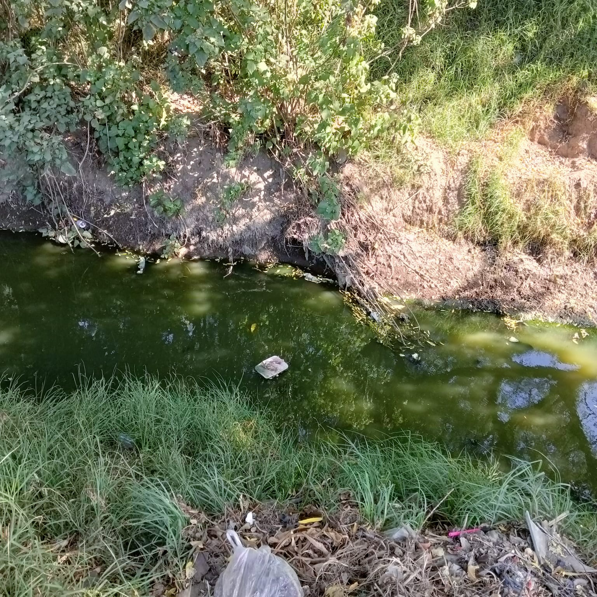
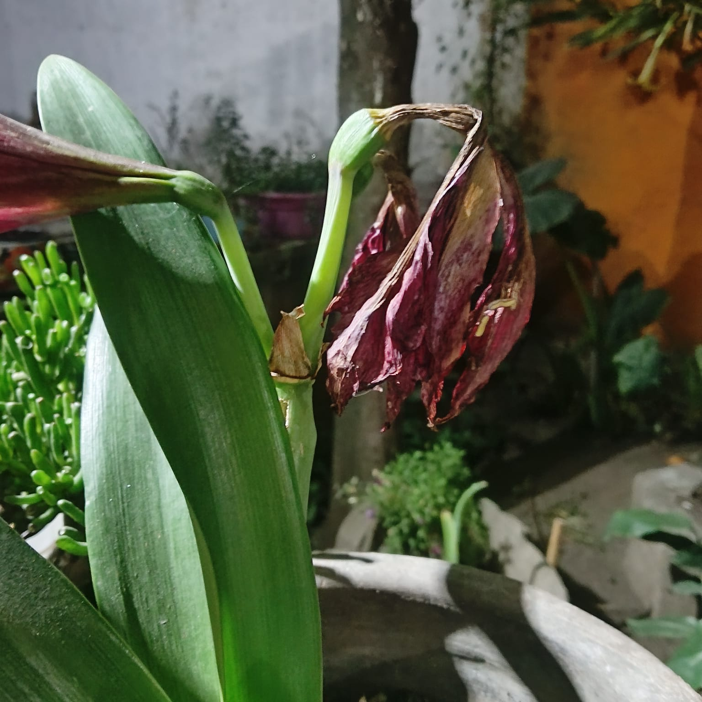

🎵 Música de Genshin Impact Official en YouTube.

You can't eat money


You can't eat money
"The Seed" es una canción de Aurora que habla sobre los problemas ambientales que enfrenta el mundo y la conexión entre la naturaleza y la humanidad. A través de su letra, la canción expresa un mensaje de advertencia sobre la destrucción del medio ambiente y la explotación de los recursos naturales. Con un tono emotivo y una melodía intensa, Aurora nos recuerda que si seguimos dañando la Tierra, no podremos cosechar un futuro sostenible.
La canción presenta una perspectiva cruda y realista de cómo el consumo desmedido y la codicia están acabando con los recursos naturales. La frase "You cannot eat money, oh no" se repite a lo largo del tema, subrayando la idea de que el dinero no puede reemplazar la naturaleza una vez que ha sido destruida. Con una instrumentación poderosa y la voz etérea de Aurora, la canción se convierte en un llamado a la acción para cuidar el planeta antes de que sea demasiado tarde. Es un himno a la resistencia ambiental y al despertar de la conciencia ecológica.